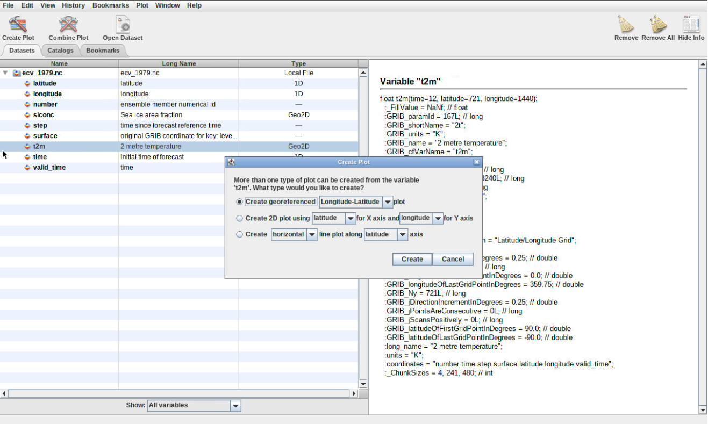
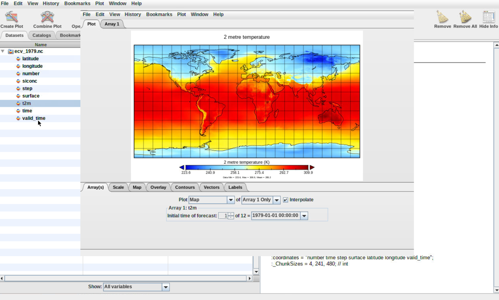
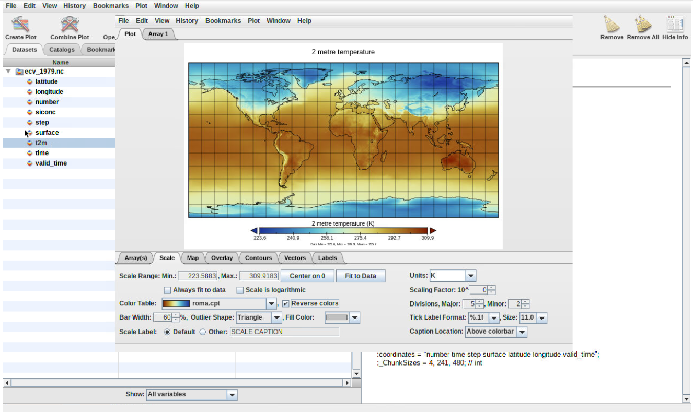
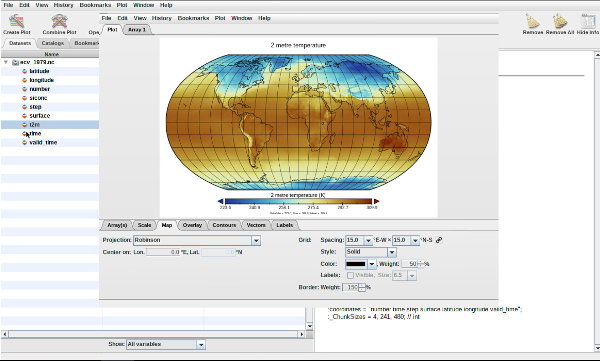
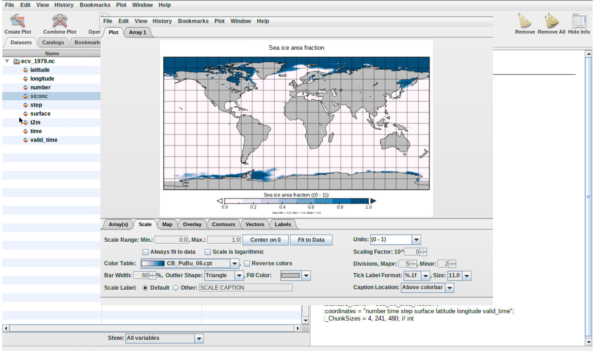
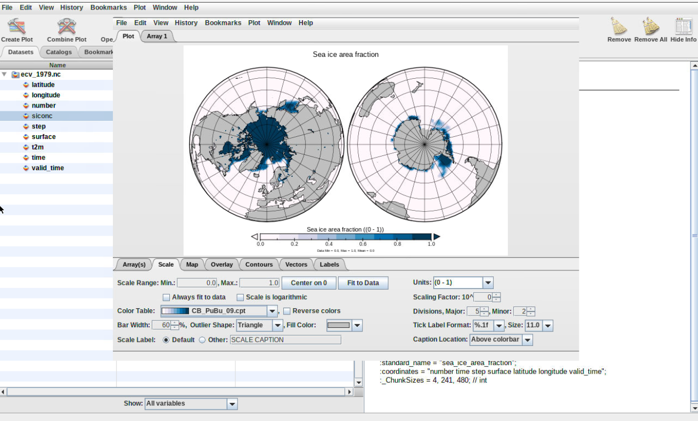
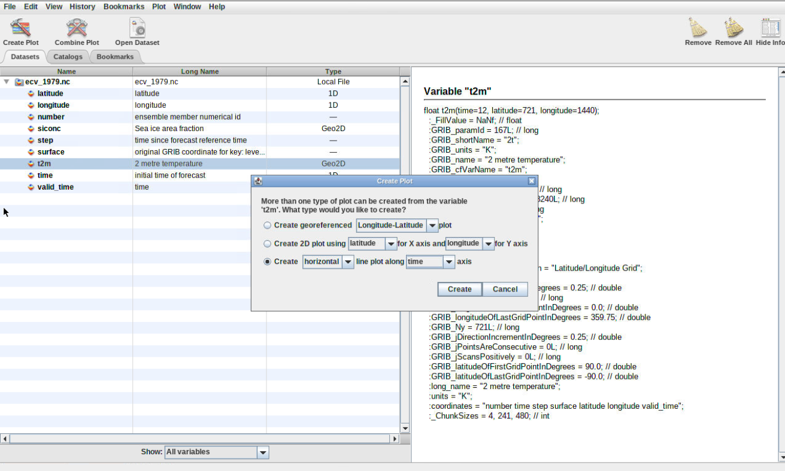
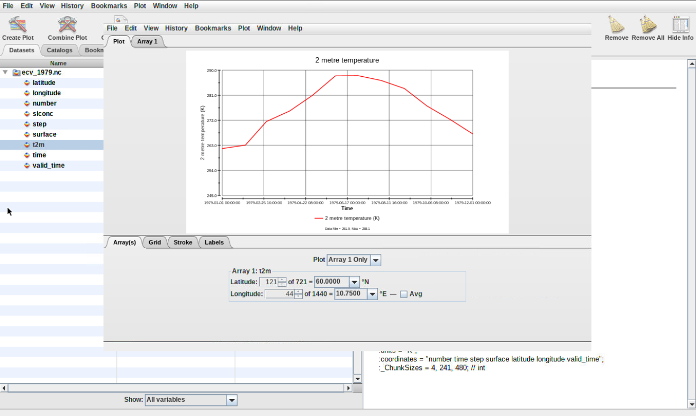

The practical aims at familiarzing you with the PanoplyGalaxy interactive environment. Panoply is among the most popular tool to visualize geo-referenced data stored in Network Common Data Form (netCDF). It provides a graphical interface for inspecting (show metadata) and visualizing netCDF data. It supports many features to customize your plots and we will introduce some of them in this lesson.
In this tutorial, you will learn to:
Plot geo-referenced latitude-longitude, latitude-vertical, longitude-vertical, time-latitude or time-vertical arrays.
Use any of numerous color tables for the scale colorbar
Save plots to GIF, JPEG, PNG or TIFF bitmap images or as PDF or PostScript graphics files.
There are many online services to get climate data, and it is often difficult to know which ones are up-to date and which resources to trust.
Different services provide different Application Programming Interfaces (API), use different terminologies, different file formats etc., which make it difficult for new users to master them all.
Therefore in this tutorial, we will be focusing on the usage of Climate data in Network Common data Form (netCDF) because it is the most common data format for storing Climate data.
We will be using a freely available dataset containing Essential Climate Variables (sea ice area fraction, surface temperature) from Copernicus Climate Data Store. We will learn to use panoply to visualize the sea ice area fraction over the poles (southern and northern poles) and surface temperatures for two different years (1979 and 2018).
NetCDF format
NetCDF data format is a binary format and to be able to read or visualize it, we would need to use dedicated software or libraries that can handle this “special” format. It is self-describing and machine-independent data format that supports the creation, access, and sharing of array-oriented scientific data. NetCDF files usually have the extension .nc or .netcdf.
For climate and forecast data stored in NetCDF format there are (non-mandatory) conventions on metadata (CF Convention).
Open the Galaxy Upload Manager (galaxy-upload on the top-right of the tool panel)
Select Paste/Fetch Data
Paste the link into the text field
Press Start
Close the window
By default, Galaxy uses the URL as the name, so rename the files with a more useful name.
tip Tip: Importing data from a data library
As an alternative to uploading the data from a URL or your computer, the files may also have been made available from a shared data library:
Go into Shared data (top panel) then Data libraries
Find the correct folder (ask your instructor)
Select the desired files
Click on the To History button near the top and select as Datasets from the dropdown menu
In the pop-up window, select the history you want to import the files to (or create a new one)
Click on Import
Check that the datatype is netcdf
Files you uploaded are in netcdf format. In Galaxy, Datatypes are, by default, automatically guessed. Here, as necdf is a derivative of the h5 format, Galaxy automatically affect the h5 datatype to netcdf files. To cope with that, one can change the datatype manually, once datasets uploaded (as shown below) OR you can directly specify datatype on the upload tool form so Galaxy will not try to automatically guess it.
tip Tip: Changing the datatype
Click on the galaxy-pencilpencil icon for the dataset to edit its attributes
In the central panel, click on the galaxy-chart-select-dataDatatypes tab on the top
Select datatypes
Click the Change datatype button
Rename Datasets
As “https://zenodo.org/record/3697454/files/ecv_1979.nc” is not a beautiful name and can give errors for some tools, it is a good practice to change the dataset name by something more meaningfull. For example by removing https://zenodo.org/record/3697454/files/ to obtain ecv_1979.nc and ecv_2018.nc, respectively.
tip Tip: Renaming a dataset
Click on the galaxy-pencilpencil icon for the dataset to edit its attributes
In the central panel, change the Name field
Click the Save button
Add a tag to the dataset corresponding to copernicus
tip Tip: Adding a tag
Click on the dataset
Click on galaxy-tagsEdit dataset tags
Add a tag starting with #
Tags starting with # will be automatically propagated to the outputs of tools using this dataset.
Check that the tag is appearing below the dataset name
Panoply
Opening up Panoply
hands_on Hands-on: Launch Panoply
Panoply is available as a Galaxy interactive environment and may not be available on all Galaxy servers.
tip Tip: Launch Panoply in Galaxy
Currently Panoply in Galaxy is available on useGalaxy.eu instance, on the “Interactive tools” tool panel section or, as all interactive tools, from the dedicated usGalaxy.eu subdomain: Live.useGalaxy.eu
Check ecv_1979.nc dataset selected in the netcdf input field
Click Execute
The tool will start running and will stay running permanently
Click on the “User” menu at the top and go to “Active Interactive Tools” and locate the Panoply instance you started.
Click on your Panoply instance
Figure 1: Select dataset
Click on ecv_1979.nc dataset
Inspect metadata
hands_on Hands-on: Inspect dataset
Inspect dataset content
Here you can look at the dataset (ecv_1979.nc) and related variables (latitude, longitude, number, siconc, etc)
question Question
what is the unit of the sea ice area fraction variable (siconc) variable?
solution Solution
The unit of siconc is (0-1) e.g. a real value between 0 (no ice) and 1 (fully coverted by ice).
Inspect the surface temperature (t2m) variable
question Question
what is the unit of this variable and its shape?
solution Solution
The unit of t2m is Kelvin (K). t2m is a 3D array (time, latitude, longitude).
Create Geo-referenced Longitude-Latitude plot
hands_on Hands-on: geographical map
Double click on the variable t2m and click on CreateFigure 2: Create map
question Question
What does it show?
What is the date of the generated plot?
Can you plot other dates?
solution Solution
The plot represent the surface temperature over the entire world.
Figure 3: Plot map
The date of the default plot is 1st January 1979 at 00:00:00.
To plot another date, change either:
Initial time of forecast (give a value between 1 and 12, corresponding to each month of year 1979.
Click on the date and scroll down to select the date of your choice.
Save your plot
Click on the tab File (from your plot window) to store your plot by selecting Save Image As
Double click on the folder outputs to enter this folder and save your plot.
You need to make sure to save all your plot in the outputs folder otherwise you can loose all your plots once to close panoply.
Change colormap
Always make sure you use color blind friendly palettes.
To change the default colormap, click on tab “Scale” (bottom of your plot wind) and select another “Color Table” (you can scroll down to go through all the different available colormap).
Save your plot using Save Image As and make sure to choose another name to avoid overwritting your preceding plot.
Figure 4: Plot colormap
Changing map projection
hands_on Hands-on: Change projection
From your previous plot window, click on Tab Map and change Projection. Try a few of them and save each of your plot with File –> Save Image As.
Figure 5: Change projection
Create another plot window for sea ice area fraction (siconc) and make a new geo-referenced map
question Question
What kind of colormap could you use to highlight the extent of sea-ice?
What projection would be best to use for showing the extent of sea-ice over the two poles?
solution Solution
Any colormap that shows low values (close to 0) in light color so we can focus on values that are close to 1. For instance, CP_PuBu_08.cpt.
Figure 6: Sea-ice colormap
Using Orthographic projection is best for showing the northern and southern poles. One advantage is that you can choose to center the plot over 90 degrees latitude. To have both the northern and southern poles at the same time, choose Stereographic (Two hemispheres).
Figure 7: Plot sea-ice using orthographic projection
Export Animation
hands_on Hands-on: Export animation
From your previous plot window, click on File and select Export Animation. Save your plot using either MOV or AVI format.
It goes through each plot e.g. for each month and create an animation where you can see the evolution of sea-ice extent from January 1979 to December 1979.
You will be able to download the resulting movie from Galaxy once you quit Panoply.
Create timeseries
hands_on Hands-on: Create 1D plot
Double click on the variable t2m, click on Create and select Create horizontal line plot along time axis (make sure to switch to time).
Figure 8: Create 1D plot
question Question
What was the maximum temperature in Oslo (latitude: 60 degrees North, longitude: 10.75 East) in 1979?
Which month was the warmest in Oslo?
solution Solution
The maximum temperature is about 288 K so about 15 degrees Celsius (288 - 273.15).
The warmest month in 1979 was July.
Figure 9: Plot surface temperature Oslo
Quit Panoply
hands_on Hands-on: Quit Panoply to keep your plots
To make sure all your plots stored in outputs folder get exported to Galaxy, you need to quit panoply:
File –> Quit Panoply.
Go back to your current Galaxy history and you should find Panoply outputs
Figure 10: Panoply outputs in Galaxy
Conclusion
We have now learnt how to analyze climate data using Panoply. We only use one of the two datasets so we strongly encourage you to do the same exercises with the second dataset ecv_2018.nc. Please note that when comparing surface temperature or sea-ice area fraction from 1979 and 2018, you would not be able to conclude anything regarding climate change. For any climate studies, long term timeseries (between 20 to 30 years) are necessary to establish climate trends.
keypoints Key points
Inspect and view netCDF data with netCDF
Interact with Galaxy to save your plots
Feedback
Did you use this material as an instructor? Feel free to give us feedback on how it went.
Batut et al., 2018 Community-Driven Data Analysis Training for Biology Cell Systems 10.1016/j.cels.2018.05.012
details BibTeX
@misc{climate-panoply,
author = "Anne Fouilloux",
title = "Visualize Climate data with Panoply netCDF viewer (Galaxy Training Materials)",
year = "2021",
month = "01",
day = "06"
url = "\url{/training-material/topics/climate/tutorials/panoply/tutorial.html}",
note = "[Online; accessed TODAY]"
}
@article{Batut_2018,
doi = {10.1016/j.cels.2018.05.012},
url = {https://doi.org/10.1016%2Fj.cels.2018.05.012},
year = 2018,
month = {jun},
publisher = {Elsevier {BV}},
volume = {6},
number = {6},
pages = {752--758.e1},
author = {B{\'{e}}r{\'{e}}nice Batut and Saskia Hiltemann and Andrea Bagnacani and Dannon Baker and Vivek Bhardwaj and Clemens Blank and Anthony Bretaudeau and Loraine Brillet-Gu{\'{e}}guen and Martin {\v{C}}ech and John Chilton and Dave Clements and Olivia Doppelt-Azeroual and Anika Erxleben and Mallory Ann Freeberg and Simon Gladman and Youri Hoogstrate and Hans-Rudolf Hotz and Torsten Houwaart and Pratik Jagtap and Delphine Larivi{\`{e}}re and Gildas Le Corguill{\'{e}} and Thomas Manke and Fabien Mareuil and Fidel Ram{\'{\i}}rez and Devon Ryan and Florian Christoph Sigloch and Nicola Soranzo and Joachim Wolff and Pavankumar Videm and Markus Wolfien and Aisanjiang Wubuli and Dilmurat Yusuf and James Taylor and Rolf Backofen and Anton Nekrutenko and Björn Grüning},
title = {Community-Driven Data Analysis Training for Biology},
journal = {Cell Systems}
}
congratulations Congratulations on successfully completing this tutorial!
 Anne Fouilloux
Anne Fouilloux